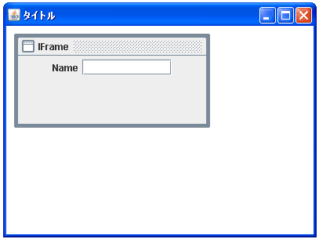

- Home ›
- Swing ›
- JDesktopPaneクラス
インターナルフレームにコンポーネントを追加する
JInternalFrameクラスのオブジェクトに対してもコンポーネントを追加する事が出来ます。基本的にJFrameクラスの場合と同じです。コンポーネントを追加するにはJFrameクラスの場合と同じくインターナルフレームから「ContentPane」を取りだし、コンテントペインにコンポーネントを追加していきます。
インターナルフレームからコンテントペインを取り出すにはJInternalFrameクラスで用意されている「getContentPane」メソッドを使います。
getContentPane public Container getContentPane()
この内部フレームのコンテンツ区画を返します。 戻り値: コンテンツ区画
メソッドを実行するとインターナルフレームから「ContentPane」を表すコンテナを取得できます。コンテナは「Container」クラスのオブジェクトです。
次に取り出したコンテナに対してコンポーネントを追加していきます。追加するにはContainerクラスで用意されている「add」メソッドを使います。
add public Component add(Component comp)
指定されたコンポーネントをこのコンテナの最後に追加します。これは addImpl(java.awt.Component, java.lang.Object, int) の簡易メソッドです。 注:コンポーネントを、表示されているコンテナに追加した場合、そのコンテナ に対して validate を呼び出し、新しいコンポーネントを表示する必要があり ます。複数のコンポーネントを追加する場合は、すべてのコンポーネントを追 加したあとで、validate を 1 回だけ呼び出すことによって、効率を向上でき ます。 パラメータ: comp - 追加されるコンポーネント 戻り値: コンポーネント引数 例外: NullPointerException - comp が null の場合
引数には追加したいComponentクラスのオブジェクトを指定します。
またコンポーネントを追加する時に配置方法を指定するメソッドも用意されています。Containerクラスで用意されている「add」メソッドを使います。
add
public void add(Component comp,
Object constraints)
指定されたコンポーネントをこのコンテナの最後に追加します。また、指定さ れた制約オブジェクトを使用して、このコンテナの配置にコンポーネントを追 加することをレイアウトマネージャーに通知します。これは addImpl(java.awt.Component, java.lang.Object, int) の簡易メソッドです。 パラメータ: comp - 追加されるコンポーネント constraints - このコンポーネントの配置条件を 表現するオブジェクト 例外: NullPointerException - comp が null の場合
1番目の引数に追加したいコンポーネントを指定し、2番目の引数には使用しているレイアウトマネージャーで用意された配置条件を表す値を指定します。
実際の使い方は次のようになります。
JInternalFrame iframe = new JInternalFrame();
JButton button = new JButton("button");
iframe.getContentPane().add(button, BorderLayout.CENTER);
※JInternalFrameクラスのデフォルトレイアウトマネージャーはBorderLayoutのようです。
サンプルプログラム
では簡単なサンプルを作成して試してみます。
import javax.swing.*;
import java.awt.BorderLayout;
public class JDesktopPaneTest11 extends JFrame{
public static void main(String[] args){
JDesktopPaneTest11 frame = new JDesktopPaneTest11();
frame.setDefaultCloseOperation(JFrame.EXIT_ON_CLOSE);
frame.setBounds(10, 10, 400, 300);
frame.setTitle("タイトル");
frame.setVisible(true);
}
JDesktopPaneTest11(){
JDesktopPane desktop = new JDesktopPane();
JInternalFrame iframe = new JInternalFrame("IFrame");
iframe.setSize(250, 120);
iframe.setLocation(10, 10);
iframe.setVisible(true);
JLabel label = new JLabel("Name");
JTextField text = new JTextField("", 10);
JPanel p = new JPanel();
p.add(label);
p.add(text);
iframe.getContentPane().add(p, BorderLayout.CENTER);
desktop.add(iframe);
getContentPane().add(desktop, BorderLayout.CENTER);
}
}
上記をコンパイルした後で実行すると次のように表示されます。

( Written by Tatsuo Ikura )

著者 / TATSUO IKURA
初心者～中級者の方を対象としたプログラミング方法や開発環境の構築の解説を行うサイトの運営を行っています。